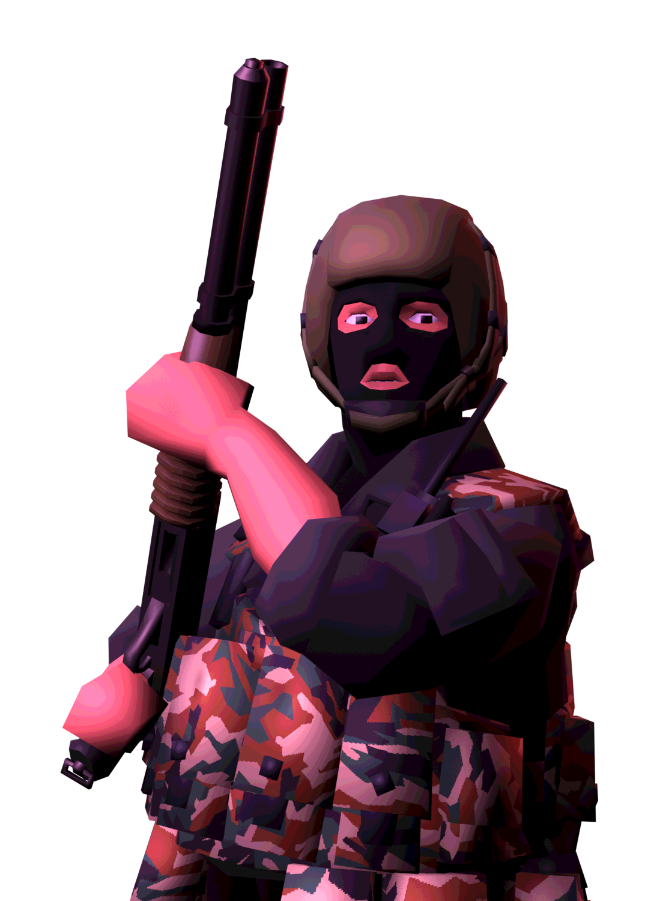

SMOG was created on March 21st, 1992, specifically under the "Directorate for Combating the Organized Crime" by the Russian internal ministry. The first detachments were formed primarily from riot police, high-ranking officers and other internal troops. The primary role of SMOG is to combat organized crime through tactical operations, and secondarily as high-risk tax collection and hostage rescue. Negotiations serve as an important tool for their operations, and officers are appointed in part due to their "moral content." SMOG has also assisted other units and formations during various crises, most notably deployed to Chechnya in 1994, alongside other paramilitary units. With the increasing wave of organized crime, SMOG have served in a. number of urban crime-fighting operations. SMOG took part in the arrest of over 60 members of the Khaletskaya gang during an... operation at a football match on April 9th. Most notably among the arrested were the leader, Andrey Belayev, and the former athlete, Aslan Zhiganov. More recently, they have set their sights on the operations of Zelenomash, an organized gang operating out of the plant of the same name.
